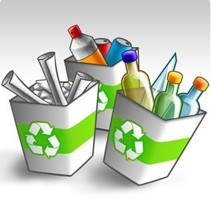
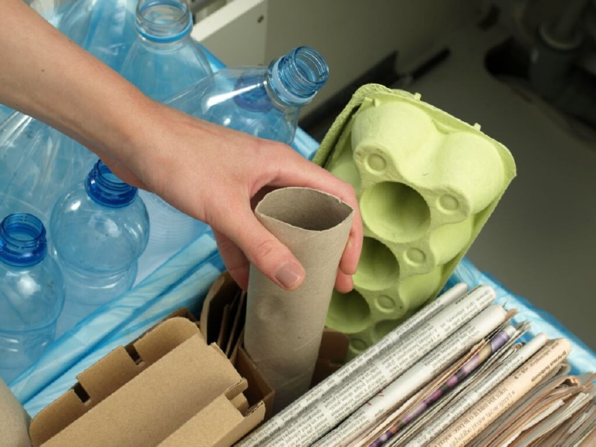
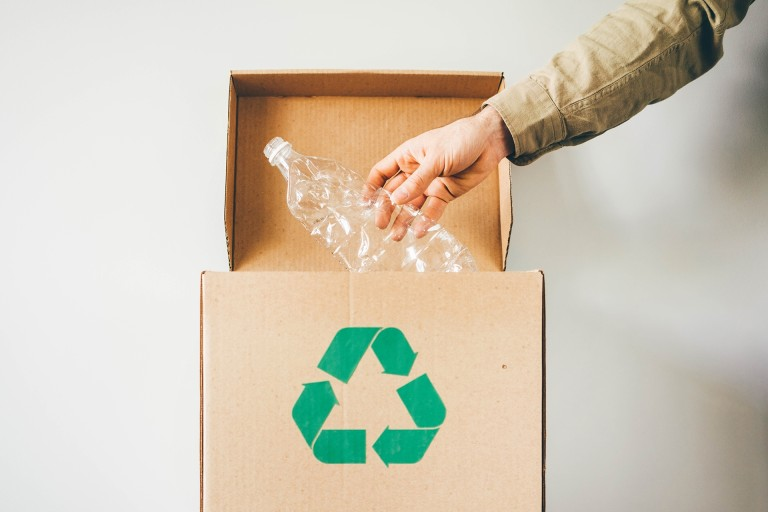

O que é Reciclagem?
A reciclagem é um processo cujo objetivo é converter resíduos em novos produtos ou matérias-primas para utilização posterior. O desuso de materiais potencialmente úteis é evitado, o consumo de novas matérias-primas e o uso de energia são reduzidos.
Tipos de materiais recicláveis
- Papel e papelão: jornais, revistas, caixas, folhas de papel.
- Plásticos: garrafas pet, sacos plásticos, embalagens.
- Vidro: garrafas, potes, frascos.
- Metais: latas de alumínio, aço, cobre.
- Orgânicos: restos de comida e materiais biodegradáveis.
Como separar recicláveis
A separação dos resíduos de forma correta faz toda a diferença na preservação do meio ambiente, pois ela evita que muitos materiais recicláveis acabem em aterros ou lixões.

- Lave e Seque as embalagens: Garrafas, recipientes de plástico e potes de vidro são exemplos de materiais que podem ser reutilizados. Sendo assim, a maneira mais fácil de facilitar esse processo é limpá-los após o uso. Por isso, lave e, se possível, seque o lixo reciclável antes de descartá-lo.
- Não misture lixos reciclável com lixos orgânicos: Não misture o lixo reciclável com o orgânico, pois cada tipo de resíduo exige um processo de tratamento e destino diferente. A mistura dos dois tipos pode dificultar o processo de separação na usina de tratamento, o que pode prejudicar a eficiência do processo de reciclagem.
- Descarte correto: A separação adequada dos resíduos garantirá a destinação correta, preservando o meio ambiente e a saúde pública. Isso começa na hora de descartá-los em casa. Por isso, deposite seus materiais recicláveis nas lixeiras apropriadas para coleta seletiva
Ações no dia a dia que fazem a diferença
- Reduza o consumo de plástico descartável.
- Reutilize embalagens e recipientes sempre que possível.
- Participe de programas de coleta seletiva em sua cidade.
- Incentive amigos e familiares a reciclarem.